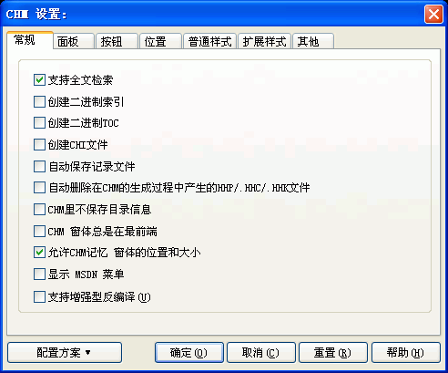

您可以通过在编译设置对话框里按"CHM设置..."按钮将看到这个对话框 - 请确保您已经新建或打开了一个工程文件。关于这个对话框的使用请看下面的具体描述.

CHM设置对话框是EASY CHM里非常重要的选项，这里的设置决定了CHM文件的外观、全文检索、按钮、位置、目录索引框的字体及颜色等特性。在不熟悉的时候，通常您只使用程序默认的设置即可。
注意：
"CHM设置"只对当前的工程文件有效。
如果您希望以后新建的工程文件都使用当前的CHM设置，可以利用"配置方案"的"保存当前设置为默认值"功能。具体请参看"CHM设置
－ 配置方案".
选项的具体描述请参见:
CHM设置-常规对话框
CHM设置-面板对话框
CHM设置-按钮对话框
CHM设置-位置对话框
CHM设置-普通样式对话框
CHM设置-扩展样式对话框
CHM设置-其他对话框
CHM设置-目录框属性设置对话框
CHM设置-索引框属性设置对话框
CHM设置 － 配置方案
| 版权所有 © 2000-2007 国华软件 保留全部权利. |